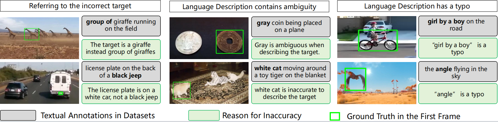
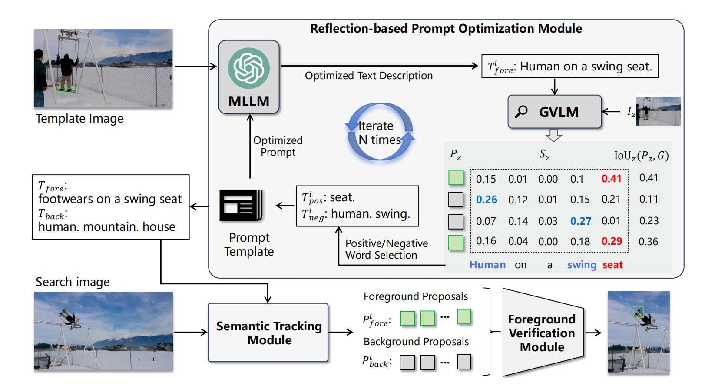

Visual Perception + X · ECNU
ChatTracker
CiteEnhancing Visual Tracking via LLM-Driven Iterative Description Refinement
NeurIPS 2024 conference version · IEEE TPAMI 2026 journal version
Abstract. Visual object tracking locates a target in a video sequence from an initial bounding box. Vision-language trackers introduce natural-language descriptions for broader applicability, but their performance is limited by noisy and ambiguous manual annotations. ChatTracker leverages multimodal large language models to generate and iteratively refine target descriptions with tracking feedback, then injects the refined semantics into visual and vision-language tracking pipelines.
The open release collects source code, raw experimental outputs, generated descriptions, and manual review results for inaccurate language annotations.
About
Descriptions should evolve with the tracker.
Existing VL tracking descriptions often point to incorrect targets, introduce ambiguity, or include typographical errors. ChatTracker uses LLM-driven reflection to refine those descriptions rather than treating them as fixed ground truth.
Annotation audit
Inaccurate language descriptions in tracking data
Manual review identifies common language failure modes and releases the review records so future trackers can be evaluated against more transparent textual supervision.


Framework
An iterative loop for semantic tracking feedback
ChatTracker routes refined descriptions into visual and vision-language trackers, then feeds tracking evidence back to the multimodal model for the next refinement step.
Explore released artifactsOpen resources
Code, raw outputs, and human review artifacts
Source Code
Implementation, evaluation scripts, and reproducibility utilities for the public release.
Open repository -> 02Raw Results
Unprocessed tracker outputs and experiment tables for independent analysis.
Download artifacts -> 03Manual Review Results
Human evaluation records for inaccurate, ambiguous, and typo-affected language annotations.
View review records ->Publications
Cite the version you use
ChatTracker: Enhancing Visual Tracking via LLM-Driven Iterative Description Refinement
Yu Zhang, Yiming Sun, Mi Zhang, Fan Yu, Shaoxiang Chen, Yang Li, Changbo Wang, Jianke Zhu, Steven C.H. Hoi.
@inproceedings{sun2024chattracker,
title={ChatTracker: Enhancing Visual Tracking Performance via Chatting with Multimodal Large Language Model},
author={Sun, Yiming and Yu, Fan and Chen, Shaoxiang and Zhang, Yu and Huang, Junwei and Li, Yang and Li, Chenhui and Wang, Changbo},
booktitle={Advances in Neural Information Processing Systems 37},
pages={39303--39324},
year={2024},
doi={10.52202/079017-1241}
}@article{zhang2026chattracker,
title={ChatTracker: Enhancing Visual Tracking via LLM-Driven Iterative Description Refinement},
author={Zhang, Yu and Sun, Yiming and Zhang, Mi and Yu, Fan and Chen, Shaoxiang and Li, Yang and Wang, Changbo and Zhu, Jianke and Hoi, Steven C. H.},
journal={IEEE Transactions on Pattern Analysis and Machine Intelligence},
pages={1--18},
year={2026},
doi={10.1109/TPAMI.2026.3674357}
}